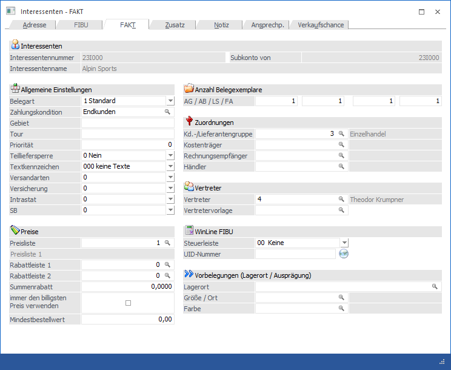
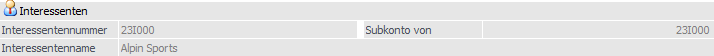
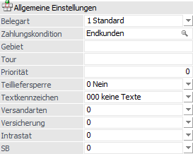
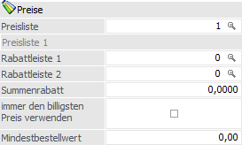
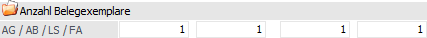
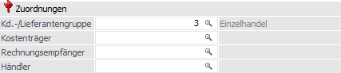
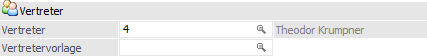
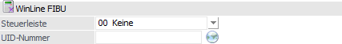
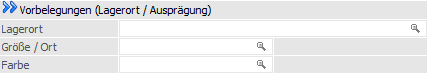

Im Register "FAKT" der Interessentenverwaltung werden alle wesentlichen Informationen verwaltet, welche speziell die Fakturierung betreffen.
Hinweis
Handelt es sich bei dem Interessenten um ein sogenanntes Subkonto, so stammen die nachfolgenden Daten vom Hauptkonto und sind nicht veränderbar (nähere Information zu dem Thema "Haupt- und Subkonto" entnehmen Sie bitte dem Kapitel "Personenkonten - Anlage", Bereich "Kontenstamm").

Folgende Eingabefelder, Einstellungen und Informationen stehen zur Verfügung:
Interessenten

Ø Interessentennummer
An dieser Stelle wird die Interessentennummer des ausgewählten Interessenten angezeigt.
Ø Subkonto von
Handelt es sich bei dem aktuellen Interessenten fakturierungstechnisch um ein Subkonto eines anderen Kontos, so wird hier die Kontonummer des sogenannten Hauptkontos angezeigt und alle folgenden Felder sind für eine Eingabe gesperrt. Handelt es sich nicht um einen Subkonto, so wird an dieser Stelle die Interessentennummer des aktuellen Kontos dargestellt.
Ø Interessentenname
Hier wird der Name des aktuell gewählten Interessenten dargestellt.
Allgemeine Einstellungen

Ø Belegart
Angabe der Standard-Belegart des Interessenten. Aus der Auswahlliste kann eine der bereits angelegten Belegarten ausgewählt werden, wobei bei Interessenten nur die Verkaufs- und bei Anfrageinteressenten nur die Einkaufsbelegarten vorgeschlagen werden.
Ø Zahlungskondition
Wird hier eine Konditionenzeile hinterlegt, so wird diese Zahlungskondition in der WinLine FAKT zur Berechnung der Faktura herangezogen. Bei der Neuanlage eines Kontos wird die erste Zahlungskondition vorgeschlagen und gespeichert, wenn das Feld "Zahlungskondition" nicht explizit angesprochen wurde.
Hinweis 1
Wird eine Zahlungskondition angegeben, die bereits auf "inaktiv" gesetzt wurde, erfolgt eine entsprechende Meldung; die Zahlungskondition kann jedoch hinterlegt werden.
Hinweis 2
In die WinLine FIBU wird beim Fakturendruck immer die Zahlungskondition aus dem Beleg (d.h. in der Regel aus diesem Feld) übergeben. Weicht die FIBU-Zahlungskonditionszeile von der FAKT-Zahlungskonditionszeile ab, hat somit die FAKT-Zeile höhere Priorität.
Ø Gebiet
Eingabe eines Gebietes, in dem der Interessent seinen Standort hat. Nach dem Gebiet kann bei diversen Auswertungen in der WinLine FAKT eingeschränkt werden.
Ø Tour
Eingabe einer Touren-Nummer. Nach der Touren-Nummer kann bei diversen Auswertungen in der WinLine FAKT eingeschränkt werden.
Ø Priorität
Um einen Liefervorschlag nach Priorität gewichten zu können, kann hier die Prioritätsstufe (5stellig) des Interessenten eingegeben werden. Kunden mit höherer Prioritätsstufe werden zuerst beliefert.
Ø Teilliefersperre
Durch Auswählen einer Option aus der Auswahlliste steuern man, ob bei diesem Interessenten die Teilliefersperre auf Belegebene bzw. auf Zeilenebene erlaubt ist oder nicht.
ü 0 - Nein
Die Auswahl "0 - Nein"
bedeutet, dass Teillieferung generell erlaubt sind.
ü 1 - auf Belegebene
Bei Auswahl
dieser Option ist eine Teillieferung nicht erlaubt, d.h. es muss der gesamte
Beleg ohne Teillieferung (oder gar nicht) ausgeliefert werden.
ü 2 - auf Zeilenebene
Die Option
bedeutet, dass die Zeilen im Belegerfassen, in denen das Flag für
Teilliefersperre gesetzt ist, nur als Ganzes ausgeliefert werden können. Wenn
bei allen Zeilen das Flag gesetzt ist, können manche Zeilen komplett und manche
Zeilen gar nicht ausgeliefert werden.
Ø Textkennzeichen
Aus der Auswahlliste kann ein Textkennzeichen hinterlegt werden. Das Textkennzeichen steuert die Behandlung von Restliefermengen in der Belegbearbeitung.
Ø Belegkopftexte 1-4
Sind die Belegkopftexte in Verwendung, so kann im Interessenten eine Vorbelegung getroffen werden, wobei pro Belegkopftext eine individuelle Hinterlegung erfolgen kann.
Hinweis
Die Definition der Belegkopftexte erfolgt in der WinLine FAKT üben den Menüpunkt "Stammdaten - Belegstammdaten - Belegkopftexte". Die Belegkopftexte werden bei der Belegbearbeitung in den Belegkopf (Register "Text") übernommen.
Preise

Ø Preisliste
Eingabe der Preisliste, die standardmäßig für diesen Interessenten verwendet werden soll. Durch Drücken der F9-Taste kann nach allen angelegten Preislisten gesucht werden.
Achtung
Wenn bei dem Interessenten eine Fremdwährung hinterlegt wurde, so muss darauf geachtet werden, dass diese Fremdwährung mit jener Fremdwährung übereinstimmt, welche für die Preisliste definiert wurde. Ist dies nicht der Fall, so weist das Programm bei der Belegerfassung darauf hin.
Ø Rabattleiste 1 / Rabattleiste 2
Angabe der Rabattleiste für artikelabhängige Zeilenrabatte. Erhält der Interessenten Staffelrabatte (z.B. Betrag 100,-; davon 10 % Rabatt und dann 5 % Rabatt), so werden 2 Rabattleisten eingetragen.
Ø Summenrabatt
An dieser Stelle erfolgt die Eingabe der Summenrabatt-Kondition des Interessenten (= Rabatt am Belegende), wobei die Eingaben -99.99 bis 99.99 % möglich sind.
Hinweis
ü kein Vorzeichen -> Zuschlagprozent für Belegendbetrag
ü negatives Vorzeichen -> Rabattprozent für Belegendbetrag
Ø immer den billigsten Preis verwenden
Wird diese Checkbox aktiviert, so wird bei der Preisfindung immer der "billigste Preis" und nicht der Preis der Prioritätenlogik (spezifischer Preis vor allgemeinen Preis; Aktionspreise vor allgemeinen Preis usw.) vorgeschlagen, wobei die Preisliste immer berücksichtigt wird! Diese Einstellung findet an folgenden Stellen Berücksichtigung:
ü im Belegerfassen bei der Eingabe eines Artikels
ü in der Preisinfo im Belegerfassen (F8-Taste) -> gesuchter Preis wird rot markiert
ü beim Durchführen der Preisfindung in der Belegumstellung
Beispiel
Für einen Artikel ist die Standardpreisliste die Preisliste1. Zusätzlich ist ein Aktionspreis (datumsspezifischer Preis) für diesen Artikel (innerhalb der Preisliste 1 vorhanden).
Bei bestimmten Interessenten sind Rabattvereinbarungen getroffen und diese Rabatte als "Zeilenrabatte" über die Preisliste hinterlegt (z.B. mittels Rabattmatrix). Dadurch kann es sein, dass der Standard-Verkaufspreis der Preisliste 1 abzüglich des Kundenrabattes günstiger ist als der normalerweise durch die WinLine herangezogene Aktionspreis.
Durch Aktivierung des Kennzeichens "immer den billigsten Preis verwenden" in der Interessentenverwaltung wird für den Interessenten wiederum der kundenspezifische Preis herangezogen.
Ø Mindestbestellwert
Beim Erfassen eines Einkaufsbeleges und beim Erzeugen einer Lieferantenbestellung (Menüpunkt "Lieferantenbestellung bearbeiten") wird der hier eingegebene Mindestbestellwert berücksichtigt. Was bei einer Unterschreitung des Mindestbestellwertes passieren soll, kann in den Fakt-Parametern definiert werden (Warnung, Sperre, usw.; nähere Informationen entnehmen Sie bitte dem WinLine START-Handbuch, Kapitel "Fakt-Parameter").
Anzahl Belegexemplare

Ø AG / AB / LS / FA
Anzahl der Belegexemplare, die pro Stufe gedruckt werden sollen (Angebot / Anfrage, Auftrag / Bestellung, Lieferschein und Faktura) D.h. wenn das Original plus 2 Kopien gewünscht ist, so wird hier die Zahl 3 eingegeben.
Hinweis
Bei der Einstellung 0 und 1 wird immer nur das Original ausgedruckt.
Zuordnungen

Ø Kd.-/Lieferantengruppe
An dieser Stelle kann die Kunden- bzw. Lieferantengruppe des Interessenten hinterlegt werden. Nach dieser Kennzeichnung kann in verschiedene Auswertungen, wie z.B. der Verkaufsstatistik, eingegrenzt werden. Des Weiteren kann diese ein Bestandteil der Preisfindung sein.
Ø Kostenträger
Hier kann ein zum Interessenten korrespondierender Kostenträger eingetragen werden. Dieser Kostenträger wird auch in der Belegbearbeitung vorgeschlagen.
Ø Rechnungsempfänger
Hier kann die Kontonummer des Interessenten eingetragen werden, der Rechnungsempfänger ist. Es sollte also nur dann eine Nummer eingetragen werden, wenn es sich z.B. um einen Filialbetrieb handelt, der zwar beliefert wird, wo die Rechnung aber immer an die Zentrale geschickt wird. In der Belegbearbeitung wird die Nummer der Zentrale als Rechnungsempfänger eingetragen, die Filiale wird dann in die Lieferadresse kopiert.
Ø Händler
In diesem Feld kann eine zusätzliche Interessentennummer hinterlegt werden (übergeordnetes Interessentenkonto). Diese Information dient zur Zusammenfassung von mehreren Interessenten zu einem Hauptkonto, wobei es für die WinLine derzeit aber keine weiterführende Funktionalität gibt.
Vertreter

Ø Vertreter
Eingabe der für diesen Interessenten zuständigen Vertreter für die integrierte Vertreterabrechnung in der WinLine FAKT. Diese Eingabe dient in der Belegbearbeitung als Vorschlag und kann jederzeit manuell übersteuert werden.
Ø Vertretervorlage
In diesem Feld kann eine Vertretervorlage hinterlegt werden. Über die so genannten "Vertretervorlagen" können Vertreter über Artikelgruppen zu Interessenten zugeordnet werden.
WinLine FIBU

Ø Steuerleiste
Eingabe einer entsprechenden Unternehmensstammleiste aus dem Unternehmensstamm. Aus der Auswahlliste kann eine angelegte Steuerleiste übernommen werden. Dadurch kann gesteuert werden, dass immer der richtige Steuerprozentsatz verwendet wird (bei Umwandlung des Interessenten in ein Personenkonto wird diese Einstellung ins Register "FIBU", Feld "Steuerleiste" übernommen).
Beispiel
In der Fakturierung gibt es zwei Arten von Artikel:
ü Waren
ü Dienstleistungen
Jeder Artikel hat ein eigenes Erlöskonto und eine eigene Steuerzeile. Die darauf entfallene Umsatzsteuer muss lt. RLG getrennt ausgewiesen werden. Wenn nun beide Artikel z.B. in die EU exportiert werden, werden über die Kontenmaskierung der Belegart eigene Erlöskonten angesteuert. Über die Steuerleiste wird nun die Steuerzeile gefunden, die gemäß dem Kunden verwendet werden muss.
Ø UID-Nummer
An dieser Stelle erfolgt die Eingabe der UST-ID-Nummer des Personenkontos, wobei der Aufbau der eigegebenen Nummer beim Verlassen des Felds auf Korrektheit geprüft wird (in Abhängigkeit der ersten beiden Stellen).
Hinweis
Grundsätzlich kann die UID-Nummer direkt auf Gültigkeit überprüft werden, wobei eine erweiterte Prüfung nur in Mandanten mit Landeskennzeichen "Österreich" und "Deutschland" möglich ist. Die Prüfung selber wird über das Icon neben dem Eingabefeld ausgelöst, wobei folgende Stati möglich sind:
ü - keine Prüfung möglich
Es wurde noch
keine bzw. keine (vom Aufbau her) gültige UID-Nummer hinterlegt. Eine Prüfung
ist somit nicht möglich.
ü - Prüfung möglich
Eine Prüfung ist
generell möglich, wobei es sich um einen deutschen Mandanten mit einer deutschen
zu prüfenden UID-Nummer handelt oder um einem Mandanten mit Landeskennzeichen
ungleich "Österreich". Bei diesen Konstellationen wird nur die Prüfung der Stufe
1 unterstützt!
Ob eine Prüfung erfolgen oder ein Protokoll ausgegeben werden
soll, kann durch Anwahl des Icons entschieden werden.
ü - Erweiterte Prüfung möglich und noch nicht
erfolgt
Eine Prüfung ist generell möglich, wobei die Prüfung der Stufe 2 noch
nicht ausgeführt wurde. Bei Anwahl des Icons stehen die unterschiedlichen
Prüfungsstufen bzw. ein Protokoll zur Auswahl zu Verfügung.
ü - UID-Nummer ist gültig
Es wurde die
Prüfung der Stufe 2 durchgeführt und die UID-Nummer wurde als gültig
erkannt.
ü - UID-Nummer ist ungültig
Es wurde die
Prüfung der Stufe 2 durchgeführt und die UID-Nummer wurde als ungültig
erkannt.
Hinweis
Weitere Informationen zur UID-Prüfung in den Stammdaten entnehmen Sie bitte dem Kapitel "Exkurs - Prüfung der Umsatzsteuer-Identifikationsnummer".
Vorbelegungen (Lagerort / Ausprägung)

Ø Lagerort
An dieser Stelle kann der Lagerort für eine automatische Lagerortaufteilung innerhalb der Belegerfassung hinterlegt werden. Wenn der vorgegebene Lagerort nicht der letzten Hierarchie-Ebene entspricht, so erfolgt die Suche nach passenden Lagerorten innerhalb der vorgegebenen Hierarchie.
Hinweis
Ob diese Vorbelegung genutzt werden soll, kann über die Belegart (Register "Erweitert") gesteuert werden. Weitere Hinweise zu der Vorbelegung und der automatischen Aufteilung entnehmen Sie bitte dem WinLine FAKT-Handbuch, Kapitel "Belegartenstamm - Register "Erweitert"".
Ø Ausprägung 1 (hier "Größe / Ort") / Ausprägung 2 (hier "Farbe")
In diesen beiden Feldern können Ausprägungen definiert werden, die in der weiteren Folge automatisch in der Belegerfassung für dieses Personenkonto genutzt werden sollen.
Hinweis
Ob diese Vorbelegung genutzt werden soll, kann über die Belegart (Register "Optionen") gesteuert werden. Weitere Hinweise zu der Vorbelegung und der automatischen Aufteilung entnehmen Sie bitte dem WinLine FAKT-Handbuch, Kapitel "Belegartenstamm - Register "Erweitert"".